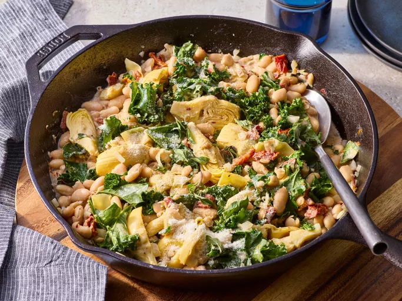

This creamy Tuscan white bean skillet is a flavorful dish featuring tender beans, artichoke hearts, and bright sun-dried tomatoes coated in a creamy sauce with Parmesan cheese. A vegetarian-friendly main dish or side, it has the feel of comfort food, elevated beyond simple beans